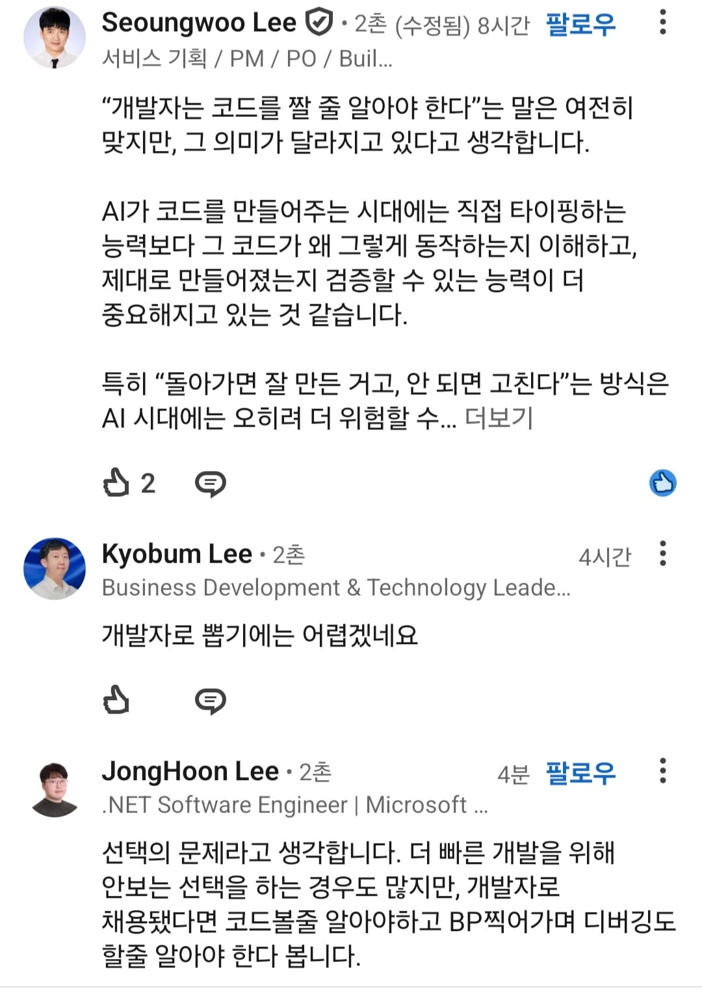

개발자 뽑는데
코드 볼 줄 모르는 사람이 옴

개발자 뽑는데
코드 볼 줄 모르는 사람이 옴
음....?????? 바이브 코딩은 돌아가는 알고리즘을 몰라도 상관이 없는건가 내가 너무 옛날 방식인가...
AI모델이 계속해서 우상향한다는 가정 하에 문제 없는 게 맞는데... AI 모델을 못 쓰거나 로컬 모델을 사용해야 하는 경우엔 도움 안 되는 건 물론이고 버그가 생겼을 경우 코드를 읽고 버그난 부분만 고치라고해서 토큰 아낄 수 있는 사람 VS "버그난 부분 고쳐줘" 해서 토근 ㅈㄴ 쓰는 사람 중에 뽑을 사람 정하라고 하면 전자일 수밖에
AI 잘 쓰는게 실력이라는데 진짜 5년안에 잘 쓰는것도 필요없어질것 같음
이게 요즘 가장 큰 문제인데...
원래 개발자가 AI를 쓰면 그 내용을 이해하고 쓰게되는데
개발 안하던 사람이 AI를 쓰면... 무슨 내용인지 모르게됨..
문제는 신입부터 AI를 쓰기 시작하면
사실상 저걸 배울 수 있는 기회 자체가 사라짐....
사다리가 끊긴다고 해야하나...
그럼 쟤를 왜 뽑아야됨???
자기돈으로 토큰을 월급이상 쓰나봄
근데 금방 저게 맞는 시대가 올 듯 ㅋㅋㅋ
지금 사람이 기계어나 어셈블리어 쓰는 건 아닌 것처럼
그 시대가 오면 저 사람 채용 할 이유가 없지
너무 진보적이긴 하지만 저 사람도 맞는 말임
예를 들어서 설명하면
옛날엔 커널부터 시작해서 컴퓨터 동작원리 등등 다 알아야 당연히 개발이 가능하던 시대가 있었음
지금은 리눅스 따위라던가 서버라던가 이런건 aws, 컨테이너 등등에 맏겨졌고 점점 프로젝트 근본에 더 신경쓰고 할 수 있도록 변화해 왔음
불과 몇달 몇년 전만해도 구글링 정도로 도움받던 ai는 거의 리뷰도 알아서 할 정도로 성능이 발달했고 더 이상 개발자들은 개발을 하지 않음 딸깍 버튼맨들이 됐음
뭐 물론 기본적인 지식은 있어야 하는 부분들도 있고 틀린 부분도 있을 수 있으나 현재 시장의 흐름은 이러함
더 이상 직군의 분류 따윈 필요가 없어지는 과도기 직전에 돌입했고 피엠이던 백엔드던 디자이너던 똑같은 프로젝트 오너임
두서없이 말했지만 지금 맞지 않는 말이 가까운 미래엔 당연시가 되는 날이 얼마 안 남았음
허나난 그게 지금이라고 보고 있음
컨트롤하고 검증할 수 없으면 그 사람을 왜 씀..? 기존의 개발자한테 ai사용하는 방법 훈련 시키지.. 코드 문외한이 그정도로 잘 개발했다면 개발자는 더더욱 잘 할거임
지금이야 쟤를 왜 뽑아 말 나와도 모델 발전하는 속도 보면 진짜 코드 볼 필요 없어질 순간 금방올듯
볼줄 몰라도 동료들이랑 함께 풀프루프 할 수 있는 방법은 파놔어지
발전이고 나발이고
지가 뭘 하는지는 알아야지
ai는 툴로 써야지 지가 할줄아는거 없고 ai딸각만 할거면 널 왜뽑냐 그냥 내가 ai좀 더쓰고말지
아는만큼 보인다고 각종 엣지케이스 예외 시나리오까지 설계해서 구현했으면 모르겠는데
저런 경우 일단 되는것처럼 보이지만 내부 까보면 엉망으로 돌아가고 있음
예를 들먄 암호화해서 민감정보 저장안하고 퍙문으로 저징한다든가... 오류처리 대응 안해서 서버 터진다든가...
툴은 어디까지나 툴이다... 편하게 쓰는건 좋은데 문제가.생겼을 때 검증할 줄은 알아야 한다고 봄
아직 AI 가 고도화 되지 않아서 그렇지 더 고도화 된다면 저사람이 맞는게 되는게 아닌가 싶다
기계어 모른다고 프로그래밍 못하는거 아닌것 처럼
이상하네, 내가 페이블을 쓰고 있기는 하지만 코드 최적화나 로직은 직접 코드를 보면서 수정해 나가는데. 내가 3일 정도 코드 리뷰를 안 하고 넘어가서 주말에 확인해보면 '동작은 하잖아, 한잔해~' 싶은 게 많았어서 100퍼센트는 못 믿겠던데..
예외를 ㅈㄴ던지거나 같은 기능하는 함수 클래스도 많고 그렇다고 리팩토링시키면 동작을 안하고 가관이던데 ㅋㅋ